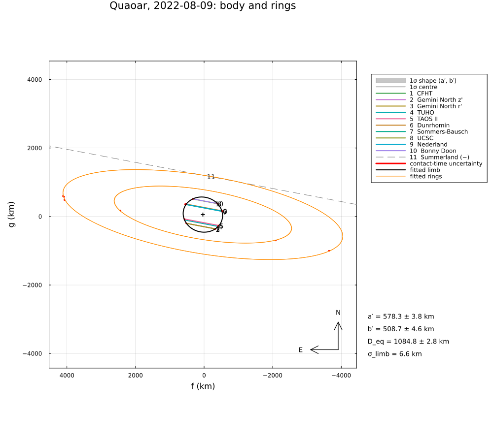
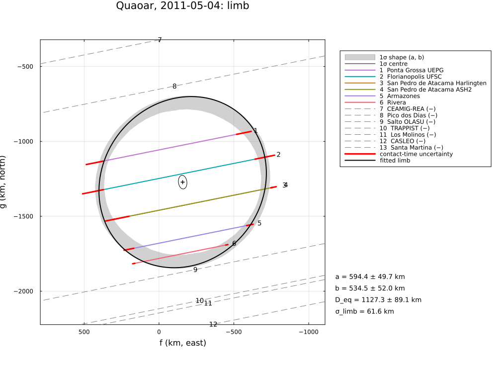

Quaoar and its rings, 2011 and 2022
Two stellar occultations by the trans-Neptunian object (50000) Quaoar, reduced from published timings: 2011 May 4, six chords in Chile, Brazil and Uruguay (Braga-Ribas et al., 2013), and 2022 August 9, ten chords in Hawaii, the USA and Mexico with detections of both rings, Q1R far outside the Roche limit and the newly found Q2R (Pereira et al., 2023). Arimatsu et al. (2019) observed a single, 45.5 s long chord in 2019 with a high-speed camera to constrain an atmosphere; its absolute times are not published, so it is not used here.
The example covers:
- 2011: the elliptical limb with the timing errors and with a limb allowance, against the paper's "crater" and "mountain" solutions;
- 2022: the limb, and the two rings from the mid-times of the ring detections with
RingedLimb: radii, opening and position angle, pole and its mirror; - the astrometry of 2022.
The data are transcribed in examples/data/quaoar_2011_2022.jl, with the stored JPL Horizons ephemerides, so the script runs offline:
julia --project=. examples/quaoar_2011_2022.jl [output_dir] (default: examples/output/quaoar_2011_2022)The code is not run when the manual is built. The output after each section is that of the last run of examples/quaoar_2011_2022.jl, stored in examples/output/quaoar_2011_2022/output.txt.
using Occultations, Random, Printf, Statistics
using Plots
import CairoMakie # saves the GeoMakie maps (Makie figures)
include(joinpath(@__DIR__, "standard_figures.jl"))
include(joinpath(@__DIR__, "data", "quaoar_2011_2022.jl"))
out = length(ARGS) >= 1 ? ARGS[1] : mkpath(joinpath(@__DIR__, "output", "quaoar_2011_2022"))
rng = MersenneTwister(2022)
P = QUAOAR_PAPER
row(label, r) = @printf("%-40s a′ = %5.1f ± %4.1f ε′ = %.3f ± %.3f PA = %5.1f ± %4.1f R_eq = %5.1f ± %4.1f χ²/dof = %.2f\n",
label, r[:equatorial_radius]..., r[:oblateness]..., mod(r[:position_angle][1], 180),
r[:position_angle][2], r[:equivalent_radius]..., r.chi2 / max(r.dof, 1))
prow(label, x) = @printf("%-40s a′ = %5.1f ± %4.1f ε′ = %.3f ± %.3f PA = %5.1f ± %4.1f R_eq = %5.1f ± %4.1f\n", label,
x.a..., x.oblateness..., mod(x.position_angle[1], 180), x.position_angle[2], x.R_equiv...)Events and geometry (paper values in parentheses)
e11 = quaoar_event(2011)
e22 = quaoar_event(2022)
for e in (e11, e22)
@printf("%s: %d positive and %d negative chords, distance %.4f au, shadow velocity %.2f km/s\n", e.name,
count(ispositive, e.chords), count(isnegative, e.chords), e.ca.dist_km / 1.495978707e8, e.ca.vel)
end
@printf("(2022: %.6f au, %.2f km/s)\n", P.e2022.distance_au, P.e2022.velocity)Quaoar, 2011-05-04: 6 positive and 7 negative chords, distance 42.3511 au, shadow velocity 18.27 km/s
Quaoar, 2022-08-09: 10 positive and 1 negative chords, distance 41.9831 au, shadow velocity 17.57 km/s
(2022: 41.983157 au, 17.57 km/s)2011 May 4: the limb
The chords have exposures of 3–14 s; the paper's elliptical fits leave χ²/dof ≈ 1.7 and are shown with a crater or a mountain explaining the misfit of the Rivera chord.
prow("published, crater solution", P.e2011.crater)
prow("published, mountain solution", P.e2011.mountain)
r11 = fit_limb(e11; rng=rng)
row("timing errors only", r11)
r11s = fit_limb(e11; σ_limb=:auto, rng=rng)
row(@sprintf("σ_limb = %.1f km", r11s.problem.σ_limb), r11s)
for x in first(sort(check_negative_chords(r11s); by=x -> x.distance), 2)
@printf(" negative chord %-16s %s, %5.1f km from the limb\n", x.chord, x.conflict ? "crosses the limb" : "outside",
x.distance)
endpublished, crater solution a′ = 656.0 ± 12.0 ε′ = 0.290 ± 0.040 PA = 21.0 ± 3.0 R_eq = 552.0 ± 14.0
published, mountain solution a′ = 568.0 ± 12.0 ε′ = 0.140 ± 0.050 PA = 7.5 ± 11.0 R_eq = 524.0 ± 20.0
timing errors only a′ = 681.4 ± 31.8 ε′ = 0.355 ± 0.012 PA = 48.8 ± 3.8 R_eq = 547.0 ± 22.5 χ²/dof = 8.79
σ_limb = 61.6 km a′ = 594.4 ± 49.7 ε′ = 0.101 ± 0.080 PA = 50.9 ± 48.4 R_eq = 563.7 ± 44.6 χ²/dof = 1.00
negative chord Salto OLASU outside, 29.6 km from the limb
negative chord Pico dos Dias outside, 80.2 km from the limb2022 August 9: the limb
prow("published (Table 2)", P.e2022)
r22b = fit_limb(quaoar_event(2022; rings=false); rng=rng)
row("timing errors only", r22b)
r22s = fit_limb(quaoar_event(2022; rings=false); σ_limb=:auto, rng=rng)
row(@sprintf("σ_limb = %.1f km", r22s.problem.σ_limb), r22s)The paper includes an allowance of the same kind (σ_model, ≈ 5 km of topography).
published (Table 2) a′ = 579.5 ± 4.0 ε′ = 0.120 ± 0.010 PA = 165.2 ± 1.2 R_eq = 543.0 ± 2.0
timing errors only a′ = 571.2 ± 1.9 ε′ = 0.097 ± 0.006 PA = 164.5 ± 0.5 R_eq = 542.7 ± 0.3 χ²/dof = 10.72
σ_limb = 6.6 km a′ = 579.4 ± 4.3 ε′ = 0.124 ± 0.014 PA = 165.4 ± 1.2 R_eq = 542.4 ± 1.4 χ²/dof = 1.002022 August 9: the rings
Q1R and Q2R are taken as circular, concentric and coplanar; the ring detections are mid-times. Q1R is far from circular in this event: the paper's Table E.1 gives radial distances of 3995–4010 km at ingress and 4107–4126 km at egress. With the timing errors alone (a few ms at Mauna Kea), the egress detections dominate and the fit is poor. An allowance σ_ring for the ring contacts – set to the rms of their residuals, iterated – lets all detections count.
model = RingedLimb(EllipseLimb(); rings=2)
init(pole) = Dict(:ring_pole_ra => pole[1], :ring_pole_dec => pole[2], :ring1_radius => 4057.0, :ring1_width => 5.0,
:ring1_tau => 0.4, :ring2_radius => 2520.0, :ring2_width => 10.0, :ring2_tau => 0.005)
fixw = [:ring1_width, :ring1_tau, :ring2_width, :ring2_tau]
σl = r22s.problem.σ_limb
ringfit(pole, σr) = fit_limb(e22; model=model, fix=fixw, init=init(pole), σ_limb=σl, σ_ring=σr, starts=4, rng=rng)
pole0 = (P.e2022.Q1R.pole[1][1], P.e2022.Q1R.pole[2][1])
rawfit = ringfit(pole0, σl)
@printf("timing errors only (σ_ring = σ_limb): χ²/dof = %.0f, Q1R radius %.0f km, B = %+.1f°\n", rawfit.chi2 / rawfit.dof,
rawfit[:ring1_radius][1], rawfit[:ring_opening][1])
σr = 30.0
for _ in 1:4
rr = ringfit(pole0, σr)
res = [x.dr for x in contact_residuals(rr) if x.kind === :mid]
global σr = max(sqrt(sum(abs2, res) / length(res)), 1.0)
end
rA = ringfit(pole0, σr)
u = EventContext(e22).u
rB = ringfit(Occultations._ring_pole(-rA[:ring_opening][1], rA[:ring_pa][1], u), σr)
@printf("ring allowance σ_ring = %.0f km (rms of the ring residuals)\n", σr)
antipode(α, δ) = (mod(α + 180, 360), -δ)
for (label, r) in (("preferred plane", rA), ("mirror plane", rB))
@printf("%-16s χ²/dof = %.2f: Q1R radius %.0f ± %.0f km, Q2R radius %.0f ± %.0f km, B = %+.1f ± %.1f°, P = %.1f ± %.1f°, pole (%.1f, %+.1f)° or antipode (%.1f, %+.1f)°\n",
label, r.chi2 / r.dof, r[:ring1_radius]..., r[:ring2_radius]..., r[:ring_opening]..., mod(r[:ring_pa][1], 360),
r[:ring_pa][2], r[:ring_pole_ra][1], r[:ring_pole_dec][1], antipode(r[:ring_pole_ra][1], r[:ring_pole_dec][1])...)
end
@printf("published: Q1R radius %.0f ± %.0f km, B = %.1f ± %.1f°, P = %.1f ± %.1f°, pole (%.2f, %+.2f)°, mirror pole (%.1f, %+.2f)°; Q2R radius %.0f ± %.0f km\n",
P.e2022.Q1R.radius..., P.e2022.Q1R.B..., P.e2022.Q1R.P..., P.e2022.Q1R.pole[1][1], P.e2022.Q1R.pole[2][1],
P.e2022.Q1R.mirror_pole..., P.e2022.Q2R.radius...)
@printf("ring plane PA − limb PA = %.1f° (paper: about 5°)\n", mod(rA[:ring_pa][1] - rA[:position_angle][1] + 90, 180) - 90)With one event both planes fit equally well; the paper selects its pole with the detections of 2018–2021 (Morgado et al. 2023), which are not included here. Radius, |B| and P from this event alone carry the larger errors that the ring's departures from a circle imply.
timing errors only (σ_ring = σ_limb): χ²/dof = 4, Q1R radius 4133 km, B = -15.9°
ring allowance σ_ring = 18 km (rms of the ring residuals)
preferred plane χ²/dof = 1.17: Q1R radius 4132 ± 30 km, Q2R radius 2619 ± 54 km, B = -16.0 ± 1.5°, P = 350.5 ± 0.3°, pole (258.2, +57.4)° or antipode (78.2, -57.4)°
mirror plane χ²/dof = 1.17: Q1R radius 4132 ± 30 km, Q2R radius 2619 ± 54 km, B = +16.0 ± 1.5°, P = 350.5 ± 0.3°, pole (179.4, +80.8)° or antipode (359.4, -80.8)°
published: Q1R radius 4057 ± 6 km, B = -20.0 ± 0.3°, P = 350.2 ± 0.2°, pole (259.82, +53.45)°, mirror pole (150.0, +79.35)°; Q2R radius 2520 ± 20 km
ring plane PA − limb PA = 5.2° (paper: about 5°)Astrometry (2022)
a = astrometry(r22s)
t = Epoch(P.e2022.position.epoch)
ra_, dec_, _ = ephem_radec(e22.body, t)
r_, d_ = Occultations.offset_radec(ra_, dec_, a.offset_ra, a.offset_dec)
@printf("%s UTC: RA %s Dec %s (σ %.2f, %.2f mas); minus Table 2: Δα cos δ = %+.2f mas, Δδ = %+.2f mas\n",
P.e2022.position.epoch, format_ra(r_; digits=6), format_dec(d_; digits=5), a.ra_err, a.dec_err,
(r_ - parse_ra(P.e2022.position.ra)) * cosd(d_) * 3.6e6, (d_ - parse_dec(P.e2022.position.dec)) * 3.6e6)2022-08-09T06:34:03.560 UTC: RA 18 21 42.867774 Dec -15 12 45.82971 (σ 0.25, 0.23 mas); minus Table 2: Δα cos δ = +0.06 mas, Δδ = -0.02 masFigures
savefig(plot(rA; title="Quaoar, 2022-08-09: body and rings", size=(1000, 900)), joinpath(out, "quaoar_2022_rings.png"))
savefig(plot(r11s; title="Quaoar, 2011-05-04: limb", size=(1000, 750)), joinpath(out, "quaoar_2011.png"))
# the standard figures of 2022 (body only): limb fits, maps and the globe
standard_figures("quaoar", r22s; out=out, projection="+proj=laea +lon_0=-125 +lat_0=30", limits=(-165, -90, 10, 55),
window=900, marks=60)
println("figures written to ", out)The body and the two rings on 2022 August 9, and the limb of 2011:

